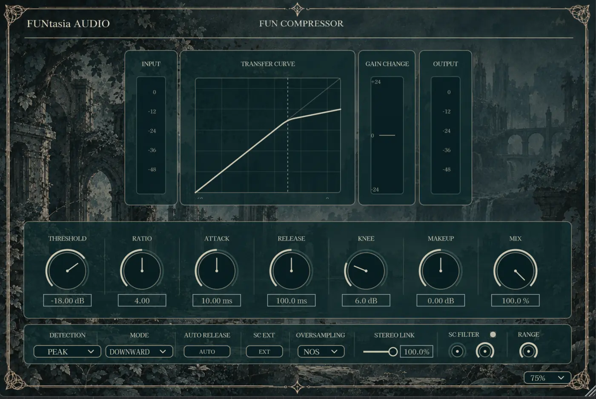
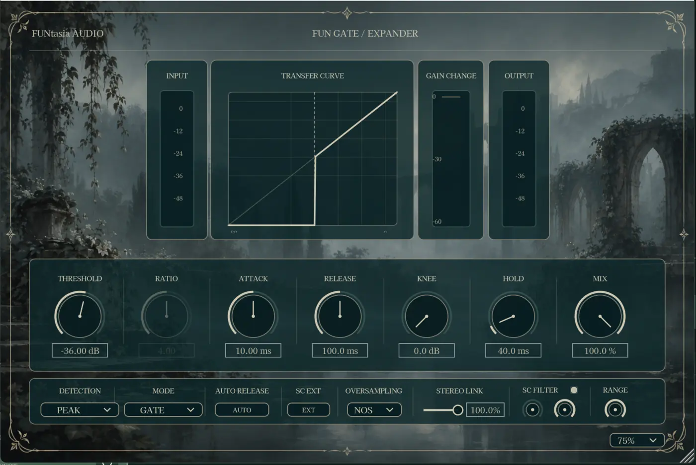

Dynamics Collection
FUN Dynamics Pack
控制峰值、帶出細節、整理安靜段落。
將 FUN Compressor 與 FUN Gate / Expander 集結於同一套組。涵蓋向下／向上壓縮，以及安靜段落與尾音的動態控制。兩款插件皆支援 Peak/RMS 偵測、外部 Sidechain、立體聲連動、Sidechain 濾波及可選的 2× 處理。
向下／向上壓縮Gate／向下 ExpanderPeak / RMS外部 SidechainSC HPF / LPFStereo LinkNOS / 2×Dry / Wet Mix